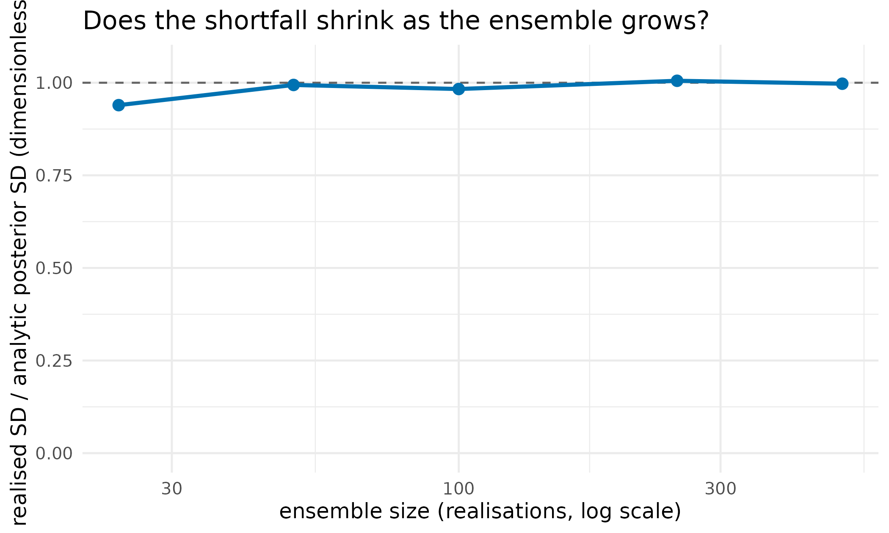
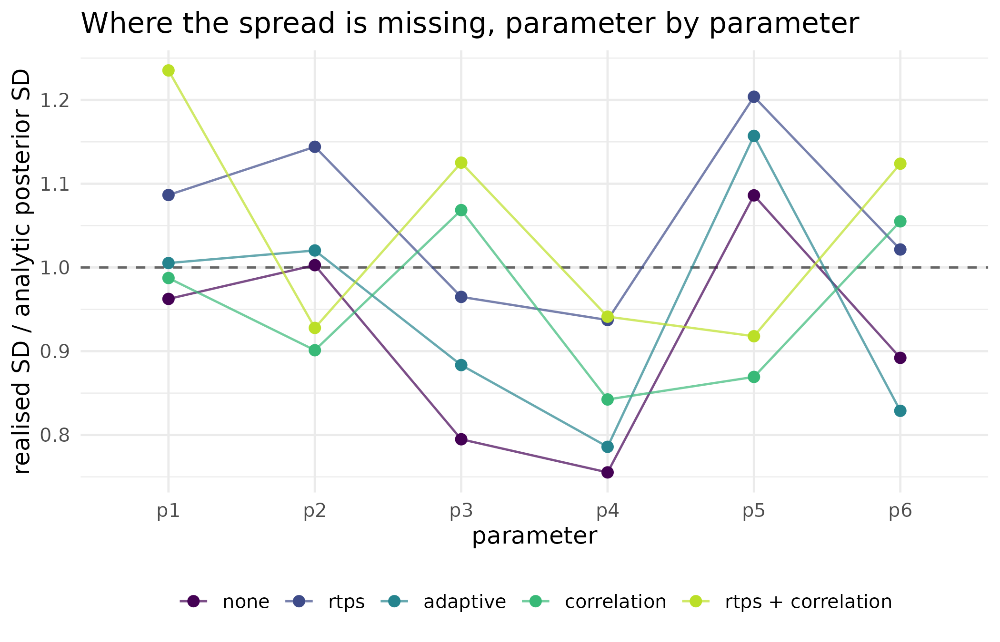
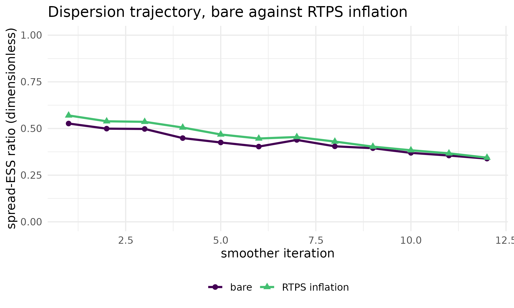

My posterior looks too confident: is the ensemble collapsing?
Source:vignettes/inflation-localisation.Rmd
inflation-localisation.RmdWhy
My calibration came back with credible intervals I do not believe: the parameters are pinned far more tightly than the data should allow, and if I hand those intervals to an agronomist they will price a decision on confidence that is not there. The question is: is my ensemble collapsing, and if it is, will covariance inflation put the spread back? This vignette answers both on a linear-Gaussian problem whose posterior is known in closed form, so the ensemble’s spread can be compared against the right answer rather than against an impression.
What
Two pathologies make a finite ensemble over-confident, and PESTO has one countermeasure for each.
The first is finite-ensemble collapse. Each
assimilation step contracts the ensemble spread, and over several
iterations the posterior variance can fall below the true posterior
variance. This is the classical effect the ensemble-Kalman literature
addresses (Whitaker and Hamill 2012; Luo and Bhakta 2020), and it
shrinks as the ensemble grows. pesto_inflation()
is the answer: it declares a covariance-inflation scheme, of which the
workhorse is relaxation to prior spread ("rtps"), rescaling
each parameter’s posterior anomalies toward the pre-update spread so the
directions that collapsed hardest are re-inflated most. An
"adaptive" method instead targets a global spread-retention
floor.
The second is spurious correlation. A finite
ensemble manufactures apparent correlations between parameters and
observations that are not there, and acting on them injects noise into
the update and accelerates collapse. pesto_localisation()
declares a localisation scheme that damps them. For parameters carrying
no spatial coordinate the recommended localiser is the correlation-based
automatic method of Luo and Bhakta (2020), which needs no metric: it
estimates a noise floor from the ensemble itself and damps sample
correlations below it. Where a genuine distance metric does exist, the
classical Gaspari-Cohn taper (Gaspari and Cohn 1999) is available
through gaspari_cohn() and
pesto_localisation("distance", ...).
Both are optional arguments to pesto_ies_callback(),
and the default NULL leaves the update identical to the
bare smoother. ensemble_spread_ess()
is the diagnostic recorded on every iteration whether or not either is
switched on: the spectral participation ratio of the parameter anomaly
covariance, which is the effective number of variance-carrying
directions.
A third pathology used to sit alongside these two and was by far the
largest: assimilating the same, unperturbed observation vector into
every realisation, which gives every member an identical data pull so
that the between-member spread stops being a posterior spread at all.
Unlike finite-ensemble collapse, it does not shrink as the ensemble
grows. PESTO’s smoother now perturbs the observations per realisation
under an ensemble-smoother-with-multiple-data-assimilation schedule
(Emerick and Reynolds 2013; see Posterior spread and observation
perturbation in ?pesto_ies_callback),
so what remains on this problem is the classical,
ensemble-size-dependent collapse that inflation and localisation were
designed for. The ensemble-size sweep below is the evidence for
that.
Do
A problem whose posterior is known
For a linear forward model d = G\theta + \varepsilon with a Gaussian prior \theta \sim N(0, C_0) and observation error \varepsilon \sim N(0, R), the posterior covariance is C_{\mathrm{post}} = (C_0^{-1} + G^{\top} R^{-1} G)^{-1}. The ensemble’s realised spread can therefore be compared against the exact answer. The problem below is synthetic and deliberately small in the ensemble, to provoke the collapse this vignette is about.
set.seed(42L)
npar <- 6L
nobs <- 10L
nreal <- 24L # a deliberately small ensemble, to provoke collapse
G <- matrix(rnorm(nobs * npar), nobs, npar)
theta_true <- rnorm(npar)
obs_sd <- 0.3
y <- as.numeric(G %*% theta_true) + rnorm(nobs, sd = obs_sd)
# Analytic posterior standard deviation (standard-normal prior).
post_cov <- solve(diag(npar) + crossprod(G) / obs_sd^2)
post_sd <- sqrt(diag(post_cov))
round(post_sd, 4)
#> [1] 0.1272 0.0826 0.1322 0.1204 0.2000 0.1058
forward <- function(theta) theta %*% t(G)
prior <- matrix(rnorm(nreal * npar), nreal, npar,
dimnames = list(NULL, paste0("p", seq_len(npar))))A small helper runs the smoother and returns the realised posterior spread alongside the collapse diagnostic recorded on the final iteration. The seed is pinned so every configuration below is compared on identical perturbed data.
run_ies <- function(inflation = NULL, localisation = NULL) {
fit <- pesto_ies_callback(
forward_model = forward,
prior_ensemble = prior,
obs = setNames(y, paste0("o", seq_len(nobs))),
obs_sd = obs_sd,
noptmax = 12L,
inflation = inflation,
localisation = localisation,
seed = 42L,
verbose = FALSE
)
par_post <- as.matrix(fit$par_ensemble[, -1L])
last_diag <- fit$iterations[[length(fit$iterations)]]
list(
sd_ratio = mean(apply(par_post, 2L, sd) / post_sd),
sd_by_par = apply(par_post, 2L, sd) / post_sd,
ess_ratio = last_diag$spread_ess_ratio
)
}The bare smoother under-disperses
bare <- run_ies()
round(c(sd_ratio = bare$sd_ratio, spread_ess_ratio = bare$ess_ratio), 3)
#> sd_ratio spread_ess_ratio
#> 0.916 0.339The mean posterior standard deviation falls short of the analytic value: with only 24 realisations for 6 parameters the ensemble is over-confident. The spread-ESS ratio quantifies the same collapse from the eigenspectrum of the parameter anomaly covariance, where 1 means variance is spread isotropically across every direction and a small value means it has collapsed onto a few.
Is this finite-ensemble collapse, or something else?
The question is worth asking of any under-dispersed ensemble, and it
has a cheap answer. If the shortfall is finite-ensemble collapse, the
ratio of realised to analytic spread climbs toward 1 as the ensemble
grows, because a larger sample gives the update a better estimate of the
true covariance structure. If it is flat in nreal, the
cause is structural and no amount of inflation will reach it. The sweep
below runs the same problem at increasing ensemble sizes, kept modest
here for build time. Each point draws its own prior from the same seed,
so its 24-realisation entry is a second draw and differs slightly from
the headline run above.
sweep_nreal <- c(24L, 50L, 100L, 250L, 500L)
sd_by_nreal <- vapply(sweep_nreal, function(n) {
set.seed(42L)
prior_n <- matrix(rnorm(n * npar), n, npar,
dimnames = list(NULL, paste0("p", seq_len(npar))))
fit_n <- pesto_ies_callback(
forward_model = forward, prior_ensemble = prior_n,
obs = setNames(y, paste0("o", seq_len(nobs))), obs_sd = obs_sd,
noptmax = 12L, seed = 42L, verbose = FALSE
)
mean(apply(as.matrix(fit_n$par_ensemble[, -1L]), 2L, sd) / post_sd)
}, numeric(1L))
tab_sweep <- data.frame(nreal = sweep_nreal, sd_ratio = sd_by_nreal)| Realisations | Realised SD / analytic SD |
|---|---|
| 24 | 0.939 |
| 50 | 0.994 |
| 100 | 0.983 |
| 250 | 1.005 |
| 500 | 0.997 |
ggplot2::ggplot(tab_sweep, ggplot2::aes(x = nreal, y = sd_ratio)) +
ggplot2::geom_hline(yintercept = 1, linetype = "dashed",
colour = "grey40") +
ggplot2::geom_line(colour = "#0072B2", linewidth = 1.1) +
ggplot2::geom_point(colour = "#0072B2", size = 2.6) +
ggplot2::scale_x_log10() +
ggplot2::expand_limits(y = c(0, 1.05)) +
ggplot2::labs(
x = "ensemble size (realisations, log scale)",
y = "realised SD / analytic posterior SD (dimensionless)",
title = "Does the shortfall shrink as the ensemble grows?"
) +
ggplot2::theme_minimal(base_size = 12)
Realised ensemble spread relative to the closed-form posterior spread, against ensemble size. The dashed line at 1 is the correct spread. The ratio climbs with the ensemble, which is the signature of finite-ensemble collapse; a curve flat in ensemble size would mean the cause lay elsewhere and inflation would only paper over it.
Run this sweep on your own problem before reaching for either countermeasure. It is also the diagnostic that exposed the unperturbed-observation defect described above: before PESTO perturbed the observations, the same sweep sat flat at about 0.21 from 24 realisations to 8,000.
Inflation re-expands the spread
rtps <- run_ies(inflation = pesto_inflation("rtps", alpha = 0.2))
adaptive <- run_ies(
inflation = pesto_inflation("adaptive", retention_floor = 0.6)
)Localisation suppresses spurious correlations
loc <- run_ies(
localisation = pesto_localisation("correlation", taper = "hard")
)The two countermeasures compose: inflation restores variance magnitude, localisation removes the spurious updates that drain it.
both <- run_ies(
inflation = pesto_inflation("rtps", alpha = 0.1),
localisation = pesto_localisation("correlation", taper = "hard")
)| Configuration | Realised SD / analytic SD | Spread-ESS ratio |
|---|---|---|
| none (bare smoother) | 0.916 | 0.339 |
| RTPS inflation, alpha = 0.2 | 1.060 | 0.344 |
| adaptive inflation, floor = 0.6 | 0.947 | 0.319 |
| correlation localisation | 0.954 | 0.599 |
| RTPS alpha = 0.1 plus localisation | 1.045 | 0.619 |
tab_bypar <- data.table::rbindlist(lapply(names(lst_runs), function(nm) {
data.table::data.table(
configuration = nm,
parameter = names(lst_runs[[nm]]$sd_by_par),
ratio = as.numeric(lst_runs[[nm]]$sd_by_par)
)
})) # ends the loop over countermeasure configurations
tab_bypar[, configuration := factor(configuration, levels = names(lst_runs))]
ggplot2::ggplot(
tab_bypar,
ggplot2::aes(x = parameter, y = ratio, colour = configuration,
group = configuration)
) +
ggplot2::geom_hline(yintercept = 1, linetype = "dashed",
colour = "grey40") +
ggplot2::geom_line(alpha = 0.7) +
ggplot2::geom_point(size = 2.2) +
ggplot2::scale_colour_viridis_d(name = NULL, end = 0.9) +
ggplot2::labs(
x = "parameter", y = "realised SD / analytic posterior SD",
title = "Where the spread is missing, parameter by parameter"
) +
ggplot2::theme_minimal(base_size = 12) +
ggplot2::theme(legend.position = "bottom")
Realised spread relative to the closed-form posterior spread, parameter by parameter, under each countermeasure. The dashed line at 1 is the correct spread. The mean over parameters is what the table reports; this figure shows that the shortfall is not spread evenly, and that a countermeasure can lift one parameter past the target while leaving another short.
The collapse trajectory
ensemble_spread_ess() is recorded on every iteration
regardless of method, so the collapse trajectory is always available in
the result, not only its endpoint.
ess_trace <- function(inflation = NULL) {
fit <- pesto_ies_callback(
forward, prior, setNames(y, paste0("o", seq_len(nobs))),
obs_sd = obs_sd, noptmax = 12L, inflation = inflation,
seed = 42L, verbose = FALSE
)
vapply(fit$iterations, function(d) d$spread_ess_ratio, numeric(1L))
}
tr_bare <- ess_trace()
tr_rtps <- ess_trace(pesto_inflation("rtps", alpha = 0.2))
tab_trace <- data.table::data.table(
iteration = rep(seq_along(tr_bare), 2L),
ess_ratio = c(tr_bare, tr_rtps),
run = rep(c("bare", "RTPS inflation"), each = length(tr_bare))
)
ggplot2::ggplot(
tab_trace,
ggplot2::aes(x = iteration, y = ess_ratio, colour = run, shape = run)
) +
ggplot2::geom_line(linewidth = 1) +
ggplot2::geom_point(size = 2.2) +
ggplot2::scale_colour_viridis_d(name = NULL, end = 0.7) +
ggplot2::scale_shape_manual(name = NULL, values = c(16L, 17L)) +
ggplot2::ylim(0, 1) +
ggplot2::labs(
x = "smoother iteration", y = "spread-ESS ratio (dimensionless)",
title = "Dispersion trajectory, bare against RTPS inflation"
) +
ggplot2::theme_minimal(base_size = 12) +
ggplot2::theme(legend.position = "bottom")
Spread-ESS ratio by smoother iteration, without and with RTPS inflation. Both decline as the update concentrates the ensemble on the directions the data inform; the inflated run sits above the bare one at every iteration. Read the gap between the lines, not the shape of either: what inflation buys here is a slower drain, not a flat line.
Read
The bare smoother under-disperses on this problem, and the numbers say by how much: the realised ensemble spread is 92 per cent of the closed-form posterior spread at 24 realisations, with a spread-ESS ratio of 0.339.
The sweep answers the first half of the question. The ratio climbs from 0.939 at 24 realisations to 0.997 at 500, across a 21-fold change in ensemble size. That is finite-ensemble collapse, which is exactly what inflation and localisation were designed for. Had the curve been flat, the conclusion to draw would have been that the cause lay elsewhere and that inflating the spread would have hidden it rather than fixed it.
The second half is the countermeasure table, and it answers with a
qualification. RTPS inflation at alpha = 0.2 lifts the
realised spread from 0.916 of the analytic value to 1.06, which is past
the target rather than up to it; the adaptive method reaches 0.947,
correlation localisation on its own 0.954, and RTPS at the weaker
alpha = 0.1 composed with localisation 1.045. Every
configuration moves the spread in the right direction, and the strongest
of them moves it too far, which is the tuning problem in one line. The
per-parameter figure shows what the mean hides: the shortfall is uneven
across the six parameters, ranging from 0.76 to 1.09 under the bare
smoother, so a single global inflation strength cannot bring every
direction to the target at once.
The trajectory figure separates two different questions. The spread-ESS ratio falls from 0.527 to 0.339 over 12 iterations in the bare run, and from 0.57 to 0.344 in the inflated one; the inflated line sits above the bare one at every iteration by an average of 0.029. That gentle decline is the update doing its job, concentrating the ensemble on the directions the data inform, and the gap between the lines is the effect being demonstrated. The spread-ESS ratio is a trajectory diagnostic; the ratio against the analytic posterior is the calibration check, and the two answer different questions.
The caveat worth stating plainly is that inflation is a
tunable remedy, not a self-correcting one. The strengths used
here, alpha = 0.2 and retention_floor = 0.6,
were chosen against this problem’s known posterior. A stronger setting
overshoots and returns an ensemble that is too wide, which misleads a
reader exactly as much as one that is too narrow. Measure the spread
ratio or the interval coverage on your own problem and tune to what you
measure; do not carry these numbers across.
Limits
The whole vignette rests on a linear-Gaussian problem with a closed-form posterior, which is what makes the calibration check exact and also what makes it unrepresentative: a real forward model is nonlinear, and there the ensemble’s shortfall against the true posterior cannot be computed at all, only estimated by interval coverage on held-out data. The sweep runs to 500 realisations, so it establishes the direction of the trend rather than the size of the ensemble at which the shortfall would close. Inflation strengths here are tuned against a known answer, which is precisely the information a real calibration lacks, and no default value in this vignette should be carried to another problem. Localisation is exercised only in its correlation-based automatic form on parameters with no spatial coordinate; the distance-based Gaspari-Cohn taper is named but not demonstrated, and a spatial problem would need it. Neither countermeasure addresses a mis-specified observation standard deviation, which is a different failure with a different fix, worked through in Wiring your own simulator into PESTO.
What to read next
Wiring your own simulator into PESTO covers the other route to a falsely confident posterior, an observation standard deviation set from the standard error of a mean rather than from the replicate spread, and shows why the spread-ESS diagnostic used here cannot see it. Can PESTO recover APSIM’s own parameters? applies inflation to held-out predictive coverage on a simulator-backed calibration. Your first inversion: from a season of measurements to a posterior is the shortest introduction to the smoother itself.
References
- Emerick, A. A., & Reynolds, A. C. (2013). Ensemble smoother with multiple data assimilation. Computers & Geosciences, 55, 3-15.
- Gaspari, G., & Cohn, S. E. (1999). Construction of correlation functions in two and three dimensions. Quarterly Journal of the Royal Meteorological Society, 125(554), 723-757.
- Luo, X., & Bhakta, T. (2020). Automatic and adaptive localization for ensemble-based history matching. Journal of Petroleum Science and Engineering, 184, 106559.
- Whitaker, J. S., & Hamill, T. M. (2012). Evaluating methods to account for system errors in ensemble data assimilation. Monthly Weather Review, 140(9), 3078-3089.
Reproduce
Seed 42 sets the design matrix, the truth, the
observation noise and every prior draw, and is passed to
pesto_ies_callback() on every run so that all
configurations are compared on identical perturbed observations. Package
versions follow.
sessionInfo()
#> R version 4.6.1 (2026-06-24)
#> Platform: x86_64-pc-linux-gnu
#> Running under: Ubuntu 24.04.4 LTS
#>
#> Matrix products: default
#> BLAS: /usr/lib/x86_64-linux-gnu/openblas-pthread/libblas.so.3
#> LAPACK: /usr/lib/x86_64-linux-gnu/openblas-pthread/libopenblasp-r0.3.26.so; LAPACK version 3.12.0
#>
#> locale:
#> [1] LC_CTYPE=C.UTF-8 LC_NUMERIC=C LC_TIME=C.UTF-8
#> [4] LC_COLLATE=C.UTF-8 LC_MONETARY=C.UTF-8 LC_MESSAGES=C.UTF-8
#> [7] LC_PAPER=C.UTF-8 LC_NAME=C LC_ADDRESS=C
#> [10] LC_TELEPHONE=C LC_MEASUREMENT=C.UTF-8 LC_IDENTIFICATION=C
#>
#> time zone: UTC
#> tzcode source: system (glibc)
#>
#> attached base packages:
#> [1] stats graphics grDevices utils datasets methods base
#>
#> other attached packages:
#> [1] PESTO_0.10.1
#>
#> loaded via a namespace (and not attached):
#> [1] vctrs_0.7.3 cli_3.6.6 knitr_1.51
#> [4] rlang_1.3.0 xfun_0.60 otel_0.2.0
#> [7] S7_0.2.2 textshaping_1.0.5 jsonlite_2.0.0
#> [10] data.table_1.18.6.1 labeling_0.4.3 glue_1.8.1
#> [13] htmltools_0.5.9 ragg_1.5.2 sass_0.4.10
#> [16] scales_1.4.0 rmarkdown_2.32 grid_4.6.1
#> [19] evaluate_1.0.5 jquerylib_0.1.4 fastmap_1.2.0
#> [22] yaml_2.3.12 lifecycle_1.0.5 compiler_4.6.1
#> [25] RColorBrewer_1.1-3 fs_2.1.0 Rcpp_1.1.2
#> [28] farver_2.1.2 systemfonts_1.3.2 digest_0.6.39
#> [31] viridisLite_0.4.3 R6_2.6.1 bslib_0.12.0
#> [34] withr_3.0.3 gtable_0.3.6 tools_4.6.1
#> [37] pkgdown_2.2.1 ggplot2_4.0.3 cachem_1.1.0
#> [40] desc_1.4.3